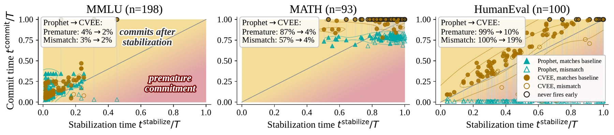
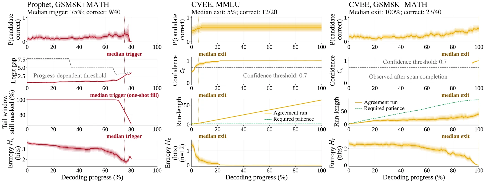
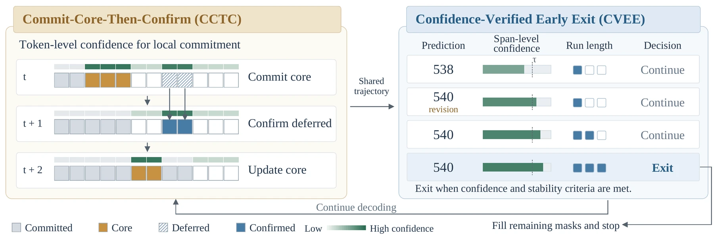
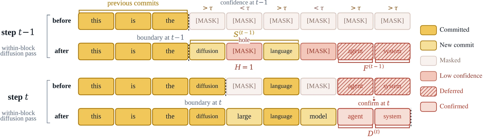

C4 speeds up diffusion language models by making two decisions separately. Locally, inside the block being decoded, it commits confident tokens sooner, so each block finishes in fewer steps. Globally, it watches the answer that the model currently predicts and stops the whole sequence once that answer is both confident and no longer changing. It needs no training and no extra forward pass, and one frozen setting serves all 12 tasks on both LLaDA and Dream.
Abstract
Diffusion language models predict tokens in parallel but still require many iterative forward passes. Adaptive sampling accelerates local token commitment, while recent global stopping methods seek to end generation early. Our trajectory analysis shows that short answers can stabilize early in decoding, whereas reasoning outputs often require more steps to settle. A fixed progress threshold therefore struggles to avoid both redundant computation on short-answer tasks and premature termination on reasoning tasks. We introduce C4, a training-free framework that combines local decoding acceleration with adaptive global early exit. Confidence-Verified Early Exit (CVEE) determines when to end generation, skipping the remaining steps once its stopping criterion is met. It combines confidence and temporal agreement to adapt stopping to the observed revision history. Commit-Core-Then-Confirm (CCTC) accelerates token commitment while generation continues, reducing the decoding steps needed to complete each block. It extends confidence-threshold parallel decoding with a boundary-anchored core and one-step confirmation of deferred predictions, constraining additional commitments to mitigate premature freezing under unresolved context. With CVEE calibrated once on LLaDA, the same numerical settings transfer across all 12 zero-shot tasks and to Dream without recalibration. Under this configuration, C4 reduces decoding steps by 64–95% and achieves measured decoding-loop speedups of 2.6×–18.6×, with task performance close to full decoding. Component analyses show complementary contributions: early exit supplies most savings on short-answer tasks, while local acceleration contributes more on reasoning and code generation.
Method
Answers settle at very different times.
A diffusion LM shows a full provisional output at every step, so you can read off its current answer long before decoding ends. We record, on full LLaDA decodes of MMLU, GSM8K and MATH, the point after which that answer never changes again. The point by which 90% of answers have settled ranges from 4% of the decoding schedule on short-answer tasks to 96% on long reasoning.
A stop rule tied to decoding progress cannot fit both: wait long enough for reasoning and you waste most of the steps on short answers; stop early enough for short answers and you cut reasoning off mid-revision. So C4 stops on evidence from the answer itself, and gets its speed on long outputs from somewhere else: faster commitment inside each block.

Show the trajectories behind this (paper Figure 2)

Two decisions on one trajectory.

At every step, a fixed parser pulls the current answer out of the provisional output. CVEE stops once
Each time the answer changes, the required number of unchanged steps grows. An answer that settles at once exits after three steps; one that keeps revising has to stay put longer. Nothing in the rule depends on how far through the schedule decoding is.
Among masked positions in the active block whose confidence clears τCCTC, CCTC commits a core next to the resolved left boundary, allowed to cross at most H = 1 unresolved position. Confident positions further right are deferred: their prediction is recorded and committed at the next step only if it is still confident and still the same token.
The decoder's own scheduled commits are kept, so progress is guaranteed, and confirmation reuses the next forward pass, so it costs no extra model call. A block whose positions are all committed skips its remaining steps.

Watch both gates on a real trajectory.
Pick a task and scrub through the steps. The token row is the active generation; the gate panel shows the answer CVEE extracts at that step, its confidence, and how many unchanged steps it still needs.
Results
Zero-shot evaluation on 12 tasks: five short-answer (64-token output), five long-reasoning (256) and two code-generation tasks graded by hidden tests (384). Backbones are LLaDA-8B-Instruct and Dream-7B-Instruct with greedy decoding in bf16; speedup is tokens per second relative to full decoding of the same model, timed on one RTX 4090.
Faster everywhere, accuracy within two points everywhere.
| Task | Output | LLaDA-8B | Dream-7B |
|---|
Speedup is method TPS over full-decoding TPS on a fixed 20-example timing subset (three repeats); accuracy and steps use each task's full evaluation set. Accuracy differences are point estimates on finite samples, not equivalence claims. Full table, including Prophet, SchED, SlowFast, KLASS and WINO: Table 1 of the paper.
Early exit carries short answers; faster commitment carries reasoning and code.
Starting from full decoding, add the CVEE exit gate alone, then the CCTC core, then one-step confirmation, then CCTC on every block including the last (= C4). Bars are average decoding steps.
On MMLU the exit gate alone already removes 89% of the steps. On GSM8K it removes almost nothing (250 of 256 steps on LLaDA, all 256 on Dream), because reasoning answers settle near the end; CCTC supplies the speedup there. Values: Table 3 of the paper.
Confidence alone or stability alone each fail somewhere.
Stopping as soon as the answer span is confident ends a 384-step program after 9.7 steps on average, and accuracy collapses.
Stopping once the extracted answer has stayed the same for a few steps ends after 24.5 of 256 steps on average, and accuracy halves.
Requiring both keeps full-decoding accuracy on GSM8K for both backbones, at the cost of waiting nearly the whole schedule — which is why the reasoning speedup has to come from CCTC.
Bolting an exit gate onto another sampler is not free.
We keep WINO's local update rule and use CVEE only to stop (LLaDA). Where answers settle early, CVEE removes another 70–76% of WINO's steps at unchanged accuracy. On reasoning and code, the same setting stops too soon; a more conservative setting recovers the accuracy but also nearly all of the steps.
| Task | WINO | + CVEE | Conservative CVEE | |||
|---|---|---|---|---|---|---|
| Acc | Steps | Acc | Steps | Acc | Steps | |
| MMLU | 61.0 | 16.8 | 61.5 | 4.1 | – | – |
| HellaSwag | 73.0 | 12.9 | 73.0 | 3.9 | – | – |
| GSM8K | 72.0 | 49.2 | 36.0 | 43.6 | 70.0 | 48.5 |
| SVAMP | 85.0 | 45.6 | 62.0 | 41.7 | 83.0 | 45.1 |
| HumanEval | 37.8 | 54.2 | 14.6 | 29.7 | 36.6 | 50.1 |
The lesson is that local sampling shapes the trajectory the stop rule reads, so the two have to be designed together. It also cuts the other way: on LLaDA GSM8K, WINO alone beats C4 in both accuracy (72.0 vs 64.0) and speed (4.03× vs 3.55×); when early-exit opportunities are scarce, the strongest local sampler can win.
Video
Every decoding frame in the video is rendered from the same recorded runs as the replay above.
BibTeX
@article{lee2026c4,
title = {Commit Locally, Exit Globally: Coordinating Adaptive Sampling and Early Exit in Diffusion Language Models},
author = {Lee, Chia-Ming and Liu, Shao-Kai and Chang, Ming-Ching and Li, Xin and Liu, Yu-Lun and Hsu, Chih-Chung},
journal = {arXiv preprint arXiv:2607.28166},
year = {2026}
}